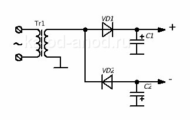
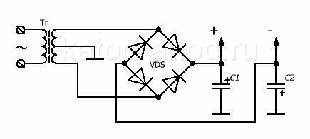
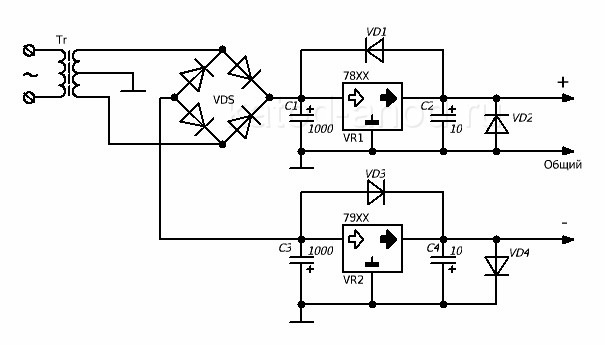

Двухполярный блок питания
Двухполярный блок питания часто используется для питания операционных усилителей и выходных каскадов мощных усилителей звуковой частоты. Так же двухполярное напряжение используется в компьютерных блоках питания.
Схема двухполярного блока питания

Рис. 1 - Простейшая схема двухполярного блока питания
Допустим, вторичная обмотка трансформатора выдаёт переменное напряжение 12,6 В. Конденсатор C1 заряжается положительным напряжением через диод VD1 во время положительного полупериода, а конденсатор C2 заряжается отрицательным напряжением через диод VD2 во время отрицательного полупериода. Каждый из конденсаторов будет заряжаться до напряжения 17,8 В (12,6×1,41). Полярности обоих конденсаторов противоположны относительно "земли" (общего вывода).
В данном блоке питания сохраняются проблемы однополупериодных выпрямителей. Т.е. ёмкость конденсаторов должна быть довольно приличной.
На рисунке 2 показана схема двухполярного блока питания, использующего диодный мост и удвоенную вторичную обмотку трансформатора с отводом от середины как общий вывод.

Рис. 2 - Схема двухполупериодного двухполярного блока питания
В данной схеме используется двухполупериодное выпрямление при котором можно использовать конденсаторы фильтра меньшей емкости при том же токе нагрузки. Но, чтобы получить то же напряжение, что и в предыдущей схеме, нам необходимо иметь обмотку на двойное напряжение, т.е. 12,6×2 = 25,2 вольта, с отводом от середины.
Стабилизированный двухполярный блок питания
Наибольшую ценность представляют стабилизированные двухполярные блоки питания. Именно они применяются в усилителях звуковых частот. Такие блоки состоят из двух стабилизированных блоков. Один из них стабилизирует положительное напряжение, а второй - отрицательное относительно общего вывода. Схема такого блока показана на рисунке 3.

Рис. 3 - Схема стабилизированного двухполярного блока питания
При использовании стабилизаторов 7805 и 7905 такой блок будет выдавать стабилизированное двухполярное напряжение ±5 В.